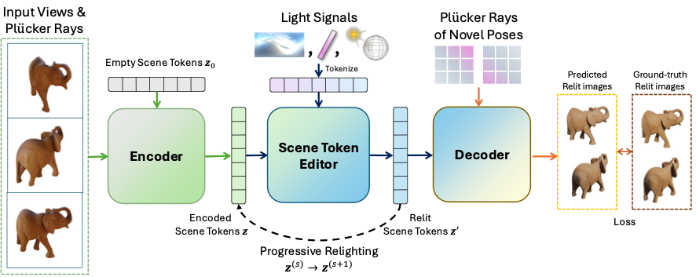

Environment map
Lighting
Overview
Existing 3D relighting methods rely on explicit material decomposition, diffusion-based view-space generation, or a combination of both—requiring full recomputation for every new lighting condition. Recent latent scene representations instead compress multi-view images into compact tokens without fixed physical semantics, opening a new design space for relighting.
We present LumiTokens, a framework that formulates 3D relighting as a direct transformation on latent scene tokens, without explicit 3D representations, rendering equations, or physics-based decomposition. A Scene Token Editor jointly processes scene tokens and Plücker-parameterized light-ray tokens through self-attention, producing updated tokens that decode into multi-view-consistent relit images. A unified ray-token interface supports environment maps, point lights, and area lights.
Because the editor output remains in the same latent space as its input, LumiTokens supports progressive relighting: users can add illumination one light source at a time, with every edit composing directly in token space. Experiments show comparable or superior relighting quality to prior methods while enabling persistent, composable lighting edits.
How it works
Encode sparse views once, edit the latent scene with light-ray tokens, and decode any requested view.

Posed sparse-view images are compressed into a compact set of unstructured latent scene tokens.
The Scene Token Editor uses self-attention to transform scene tokens jointly with unified Plücker light-ray tokens.
Decode a relit novel view, or feed the updated tokens back to the editor to compose another lighting change.
Results
Explore diverse lighting conditions and progressive edits. Select a lighting setup within each card to compare results.
Reference
@inproceedings{chen2026lumitokens,
title = {LumiTokens: 3D Relighting via Token-Space Lighting Transformation},
author = {Chen, Yiwen and Gadelha, Matheus and Jiang, Huaizu},
booktitle = {European Conference on Computer Vision (ECCV)},
year = {2026},
url = {https://arxiv.org/abs/2608.18215}
}